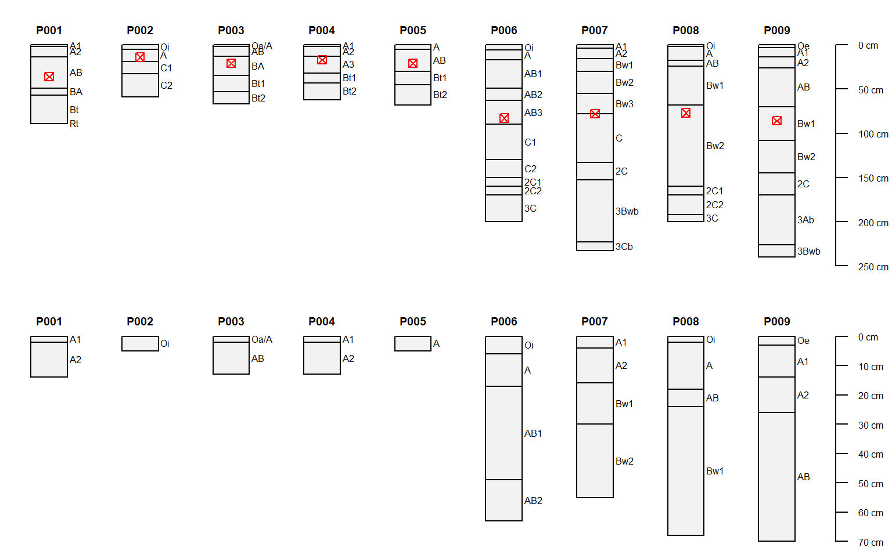

Apply a function to soil profiles within a SoilProfileCollection object.
profileApply-methods.RdApply a function to soil profiles within a SoilProfileCollection object, each iteration has access to a SoilProfileCollection object.
# method for SoilProfileCollection objects profileApply(object, FUN, simplify = TRUE, frameify = FALSE, chunk.size = 100, column.names = NULL, ...)
Arguments
| object | a SoilProfileCollection |
|---|---|
| FUN | a function to be applied to each profile within the collection |
| simplify | logical, should the result be simplified to a vector? default: TRUE; see examples |
| frameify | logical, should the result be collapsed into a data.frame? default: FALSE; overrides simplify argument; see examples |
| chunk.size | numeric, size of "chunks" for faster processing of large SoilProfileCollection objects; default: 100 |
| column.names | character, optional character vector to replace frameify-derived column names; should match length of |
| ... | additional arguments passsed to FUN |
Methods
signature(object = "SoilProfileCollection")
Value
When simplify is TRUE, a vector of length nrow(object) (horizon data) or of length length(object) (site data). When simplify is FALSE, a list is returned. When frameify is TRUE, a data.frame is returned. An attempt is made to identify idname and/or hzidname in the data.frame result, safely ensuring that IDs are preserved to facilitate merging profileApply result downstream.
See also
Examples
data(sp1) depths(sp1) <- id ~ top + bottom # estimate soil depth using horizon designations profileApply(sp1, estimateSoilDepth, name='name', top='top', bottom='bottom')#> P001 P002 P003 P004 P005 P006 P007 P008 P009 #> 89 59 67 62 68 200 233 200 240# scale a single property 'prop' in horizon table # scaled = (x - mean(x)) / sd(x) sp1$d <- profileApply(sp1, FUN=function(x) round(scale(x$prop), 2)) plot(sp1, name='d')# compute depth-wise differencing by profile # note that our function expects that the column 'prop' exists f <- function(x) { c(x$prop[1], diff(x$prop)) } sp1$d <- profileApply(sp1, FUN=f) plot(sp1, name='d')# compute depth-wise cumulative sum by profile # note the use of an anonymous function sp1$d <- profileApply(sp1, FUN=function(x) cumsum(x$prop)) plot(sp1, name='d')# compute profile-means, and save to @site # there must be some data in @site for this to work site(sp1) <- ~ group sp1$mean_prop <- profileApply(sp1, FUN=function(x) mean(x$prop, na.rm=TRUE)) # re-plot using ranks defined by computed summaries (in @site) plot(sp1, plot.order=rank(sp1$mean_prop))#>## iterate over profiles, calculate on each horizon, merge into original SPC # example data data(sp1) # promote to SoilProfileCollection depths(sp1) <- id ~ top + bottom#>#> Error in eval(predvars, data, env): object 'group' not found# calculate horizon thickness and proportional thickness # returns a data.frame result with multiple attributes per horizon thicknessFunction <- function(p) { hz <- horizons(p) depthnames <- horizonDepths(p) res <- data.frame(profile_id(p), hzID(p), thk=(hz[[depthnames[[2]]]] - hz[[depthnames[1]]])) res$hz_prop <- res$thk / sum(res$thk) colnames(res) <- c(idname(p), hzidname(p), 'hz_thickness', 'hz_prop') return(res) } # list output option with simplify=F, list names are profile_id(sp1) list.output <- profileApply(sp1, thicknessFunction, simplify = FALSE) head(list.output)#> $P001 #> id hzID hz_thickness hz_prop #> 1 P001 1 2 0.02247191 #> 2 P001 2 12 0.13483146 #> 3 P001 3 35 0.39325843 #> 4 P001 4 8 0.08988764 #> 5 P001 5 32 0.35955056 #> 6 P001 6 0 0.00000000 #> #> $P002 #> id hzID hz_thickness hz_prop #> 1 P002 7 5 0.08474576 #> 2 P002 8 14 0.23728814 #> 3 P002 9 14 0.23728814 #> 4 P002 10 26 0.44067797 #> #> $P003 #> id hzID hz_thickness hz_prop #> 1 P003 11 2 0.02985075 #> 2 P003 12 11 0.16417910 #> 3 P003 13 22 0.32835821 #> 4 P003 14 18 0.26865672 #> 5 P003 15 14 0.20895522 #> #> $P004 #> id hzID hz_thickness hz_prop #> 1 P004 16 2 0.03225806 #> 2 P004 17 11 0.17741935 #> 3 P004 18 19 0.30645161 #> 4 P004 19 11 0.17741935 #> 5 P004 20 19 0.30645161 #> #> $P005 #> id hzID hz_thickness hz_prop #> 1 P005 21 5 0.07352941 #> 2 P005 22 25 0.36764706 #> 3 P005 23 15 0.22058824 #> 4 P005 24 23 0.33823529 #> #> $P006 #> id hzID hz_thickness hz_prop #> 1 P006 25 6 0.030 #> 2 P006 26 11 0.055 #> 3 P006 27 32 0.160 #> 4 P006 28 14 0.070 #> 5 P006 29 27 0.135 #> 6 P006 30 40 0.200 #> 7 P006 31 20 0.100 #> 8 P006 32 10 0.050 #> 9 P006 33 10 0.050 #> 10 P006 34 30 0.150 #># data.frame output option with frameify=TRUE df.output <- profileApply(sp1, thicknessFunction, frameify = TRUE) head(df.output)#> id hzID hz_thickness hz_prop #> 1 P001 1 2 0.02247191 #> 2 P001 2 12 0.13483146 #> 3 P001 3 35 0.39325843 #> 4 P001 4 8 0.08988764 #> 5 P001 5 32 0.35955056 #> 6 P001 6 0 0.00000000# since df.output contains idname(sp1) and hzidname(sp1), # it can safely be merged by a left-join via horizons<- setter horizons(sp1) <- df.output plot(density(sp1$hz_thickness, na.rm=TRUE), main="Density plot of Horizon Thickness")## iterate over profiles, subsetting horizon data # example data data(sp1) # promote to SoilProfileCollection depths(sp1) <- id ~ top + bottom#>#> Error in eval(predvars, data, env): object 'group' not found# make some fake site data related to a depth of some importance sp1$dep <- profileApply(sp1, function(i) {round(rnorm(n=1, mean=mean(i$top)))}) # custom function for subsetting horizon data, by profile # keep horizons with lower boundary < site-level attribute 'dep' fun <- function(i) { # extract horizons h <- horizons(i) # make an expression to subset horizons exp <- paste('bottom < ', i$dep, sep='') # subset horizons, and write-back into current SPC horizons(i) <- subset(h, subset=eval(parse(text=exp))) # return modified SPC return(i) } # list of modified SoilProfileCollection objects l <- profileApply(sp1, fun, simplify=FALSE) # re-combine list of SoilProfileCollection objects into a single SoilProfileCollection sp1.sub <- union(l) # graphically check par(mfrow=c(2,1), mar=c(0,0,1,0)) plot(sp1)#>#>if (FALSE) { ## ## helper functions: these must be modified to suit your own data ## # compute the weighted-mean of some property within a given diagnostic horizon # note that this requires conditional eval of data that may contain NA # see ?slab for details on the syntax # note that function expects certain columns within 'x' f.diag.wt.prop <- function(x, d.hz, prop) { # extract diagnostic horizon data d <- diagnostic_hz(x) # subset to the requested diagnostic hz d <- d[d$diag_kind == d.hz, ] # if missing return NA if(nrow(d) == 0) return(NA) # extract depths and check for missing sv <- c(d$featdept, d$featdepb) if(any(is.na(sv))) return(NA) # create formula from named property fm <- as.formula(paste('~', prop)) # return just the (weighted) mean, accessed from @horizons s <- slab(x, fm, slab.structure=sv, slab.fun=mean)$value return(s) } # conditional eval of thickness of some diagnostic feature or horizon # will return a vector of length(x), you can save to @site f.diag.thickness <- function(x, d.hz) { # extract diagnostic horizon data d <- diagnostic_hz(x) # subset to the requested diagnostic hz d <- d[d$diag_kind == d.hz, ] # if missing return NA if(nrow(d) == 0) return(NA) # compute thickness thick <- d$featdepb - d$featdept return(thick) } # conditional eval of property within particle size control section # makes assumptions about the SPC that is passed-in f.psc.prop <- function(x, prop) { # these are accessed from @site sv <- c(x$psctopdepth, x$pscbotdepth) # test for missing PCS data if(any(is.na(sv))) return(NA) # this should never happen... unless someone made a mistake # check to make sure that the lower PSC boundary is shallower than the depth if(sv[2] > max(x)) return(NA) # create formula from named property fm <- as.formula(paste('~', prop)) # return just the (weighted) mean, accessed from @horizons s <- slab(x, fm, slab.structure=sv, slab.fun=mean)$value return(s) } # try with some sample data data(loafercreek, package='soilDB') profileApply(loafercreek, f.diag.wt.prop, d.hz='argillic horizon', prop='clay') profileApply(loafercreek, f.diag.thickness, d.hz='argillic horizon') profileApply(loafercreek, f.psc.prop, prop='clay') }